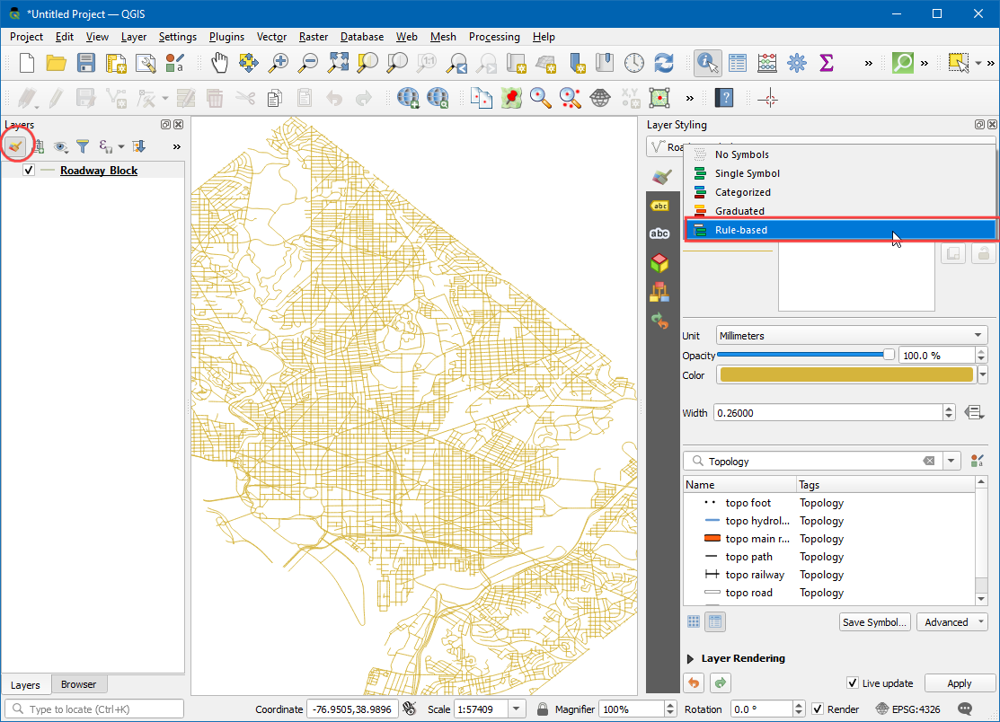

Basic Network Visualization and Routing (QGIS3)¶
Creating, visualizing, and managing networks is an important part of GIS. Many types of physical infrastructure such as roads, railways, utilities can be modeled as networks with lines and nodes - with properties attached to them. In this tutorial, we will learn how road networks are commonly modeled and apply some styling techniques to visualize the routing properties. We will also use QGIS3’s built-in tools for network analysis that to find the shortest path between 2 points along with the network.
Overview of the task¶
We will take a layer of roadway block for Washington DC, visualize the connectivity and build a network to find shortest path between any 2 points in the city.
Other skills you will learn¶
How to use data defined overrides to align an arrow symbol based on line direction.
Get the data¶
District of Columbia government freely shares hundreds of datasets on the Open Data Catalog.
Download the Roadway Block shared by DCGISopendata data as a shapefile.

For convenience, you may directly download a copy of the datasets from the links below:
Data Source: [DCOPENDATA]
Procedure¶
Locate the downloaded
Roadway_Block-shp.zipfile in the Browser panel. Expand it and drag theRoadway_Block.shpfile to the canvas.

You will see a new line layer called
Roadway_Blockadded to the Layers panel. This layer represents each road in Washington DC. Select the Identify tool in the Attributes Toolbar. Click on any road segment to see what attributes are attached to it. There are standard attributes like Route-name, Road-type etc. there is an attribute calledSUMMARYDIR. This is an import attribute for routing as it specifies whether the segment is two-way or one-way. It contains 4 different values.BD(Both Directions) for two-way streets.OB(Out Bound) for one-way streets where the traffic is allowed in the direction of the line (start-point to end-point) andIB(In Bound) for one-way streets where the traffic flows in the opposite direction of the line. There is also??value where we will assume two-way traffic. We will now use the information in that attribute to display an arrow on one-way streets.

Click the Open the layer Styling Panel button in the Layers panel. Select the
Rule-basedrenderer from the drop-down menu.

We will create a new style with a filter for only the one-way roads. Click the Add rule + button.

In the Edit rule dialog, click the Expression button.

In the Expression string builder dialog, expand the Fields and Values section in the middle-panel. Select the
SUMMARYDIRattribute and click All Unique in the right-hand panel. The 4 values that we discussed earlier will appear. Having these values here as a reference helps when building the expression. Also, you can double-click on any value to add them to the expression.

The goal is to create an expression that selects all one-way streets. Enter the following expression and click OK.
"SUMMARYDIR" in ('IB', 'OB')
Next, change the Symbol layer type to
Marker line.

Select
on center pointunder Marker placement.

Click on the
Simple markersymbol. Scroll down and pick thefilled_arrowheadmarker. You will see that the arrow-like symbol now appears on the one-way streets. But all of them are pointing in a single direction, whereas we know that our filter contains roads in multiple directions. We can further refine the symbols with a data-defined override for the Rotation value.

Click the Data defined override button next to Rotation.

We can put a conditional expression that returns different rotation values depending on the one-way direction. A 180° degree rotation for the road with opposite direction will make the direction perfect, In this, we will make the Roads with
IBattribute rotate 180° hence all roads will have the correct traffic flow direction. Enter the following expression and click OK.
if( "SUMMARYDIR" = 'IB', 180, 0)
Now you will see the arrow-heads aligned to the correct road direction. To keep the style uncluttered, we are choosing to display arrows only on one-way streets. Unlabeled streets are assumed to be two-way. Now that we have the network styled correctly, we can do some analysis. Go to .

Search for and locate the algorithm. Double-click to launch it.

In the Shortest Path (Point to Point) dialog, select
Roadway_Blockas the Vector layer representing network. Keep the Path type to calculate asShortest. Next, we need to pick a start and endpoint. You can click the … button and click on any point on the network in the canvas. If you want to replicate the results in this tutorial, you can enter-76.99730092166396,38.887624846748984as the Start point and-76.99154831062152,38.89151000569929as the End point. Expand the Advanced parameter section. ChooseSUMMARYDIRas the Direction field. You must be familiar with the one-way direction values for the forward and backward traffic flow. EnterOBas the Value for the forward direction andIBas the Value for the backward direction. Keep other options to their default values and click Run.

The algorithm will use the geometry of the layer and provided parameters to build a network graph. This graph is then used to find the shortest path between the start and endpoints. Once the algorithm finishes, you will see a new layer
Shortest pathadded to the Layers panel that shows the shortest path between start and endpoints.

You will see that there are many possible paths between start and endpoints. But given the constraints of the network - such as one-ways, the result is the shortest possible path. It is always a good idea to validate your analysis and assumptions. One easy way to validate it is to use a third-party mapping service to see if their results match with the ones we derived. Here is the shortest path suggested by Google Maps between the same start and endpoints. As you can see the recommended shortest route matches exactly with our results - validating our analysis.

If you want to give feedback or share your experience with this tutorial, please comment below. (requires GitHub account)